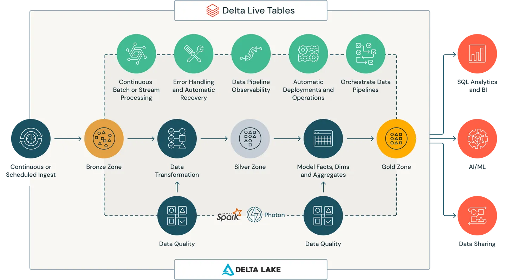
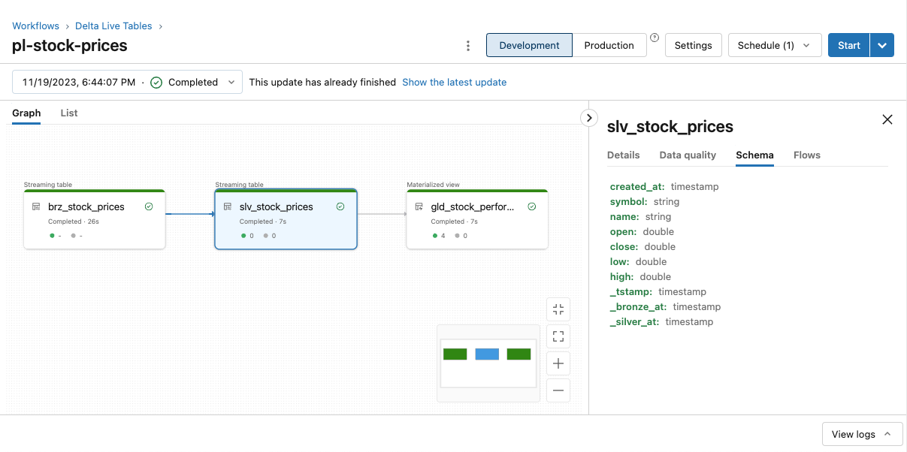

Pipeline
API Documentation
From all the models, Pipeline is without a doubt the most critical and fundamental one for building a Lakehouse.
Delta Live Tables (DLT)¤
The main purpose of the Pipeline model is to declare a Databricks Delta Live Tables object, a declarative ETL framework that helps simplify streaming and batch transformations.
Simply define the transformations to perform on your data and let DLT pipelines automatically manage task orchestration, cluster management, monitoring, data quality and error handling.
Delta Live Tables are immensely powerful and greatly simplify the process of brining raw data into actionable analytics.

Tables¤
The added value of using Laktory for setting up Delta Live Tables is the ability to not only select the notebooks associated with the pipeline, but also directly declares the expected tables and columns. Each bronze and silver table will be built using a definition from the configuration file and a template notebook.
First, let's have a look at the notebook template for silver tables:
from laktory import dlt
from laktory import read_metadata
from laktory import get_logger
dlt.spark = spark
logger = get_logger(__name__)
# Read pipeline definition
pl_name = spark.conf.get("pipeline_name", "pl-stock-prices")
pl = read_metadata(pipeline=pl_name)
# Define table
def define_table(table):
@dlt.table(name=table.name, comment=table.comment)
def get_df():
logger.info(f"Building {table.name} table")
# Read Source
df = table.builder.read_source(spark)
df.printSchema()
# Process
df = table.builder.process(df, spark=spark)
# Return
return df
return get_df
# --------------------------------------------------------------------------- #
# Execution #
# --------------------------------------------------------------------------- #
# Build tables
for table in pl.tables:
if table.layer == "SILVER":
wrapper = define_table(table)
df = dlt.get_df(wrapper)
display(df)
dltmodule is imported from Laktory as it will provide additional debugging and inspection capabilities- notebook is completely generic and can process any silver table
- within the context of the notebook, an instance name
plof themodels.Pipelineclass is created - the information required to read source data, build new columns, etc. is all stored within that
plobject
Let's see how this is declared in the configuration file
name: pl-stock-prices
catalog: dev
target: finance
clusters:
- name : default
node_type_id: Standard_DS3_v2
autoscale:
min_workers: 1
max_workers: 2
libraries:
- notebook:
path: /pipelines/dlt_brz_template.py
- notebook:
path: /pipelines/dlt_slv_template.py
- notebook:
path: /pipelines/dlt_gld_stock_performances.py
permissions:
- group_name: account users
permission_level: CAN_VIEW
- group_name: role-engineers
permission_level: CAN_RUN
# --------------------------------------------------------------------------- #
# Tables #
# --------------------------------------------------------------------------- #
tables:
- name: brz_stock_prices
timestamp_key: data.created_at
builder:
layer: BRONZE
event_source:
name: stock_price
producer:
name: yahoo-finance
read_as_stream: True
- name: slv_stock_prices
timestamp_key: created_at
builder:
layer: SILVER
table_source:
name: brz_stock_prices
read_as_stream: True
columns:
- name: created_at
type: timestamp
spark_func_name: coalesce
spark_func_args:
- data._created_at
- name: symbol
type: string
spark_func_name: coalesce
spark_func_args:
- data.symbol
- name: open
type: double
spark_func_name: coalesce
spark_func_args:
- data.open
- name: close
type: double
spark_func_name: coalesce
spark_func_args:
- data.close
As you can see:
- Each bronze and silver table is explicitly defined, including:
- The source of data
- The desired output columns
- How to build these columns
And the final result:

More details on how to define a table from a configuration file is available here
Streaming¤
The event-based and kappa architectures promoted by Laktory lend themselves very well for Spark structured streaming, a real-time data processing framework that enables continuous, scalable, and fault-tolerant processing of data streams. Databricks extends Spark's capabilities to handle structured streaming seamlessly. Unlike traditional batch processing, where data is processed in fixed intervals, structured streaming allows for the continuous processing of data as it arrives.
This concept is easy to apply with DLT and Laktory.
Simply ensure that the read_as_stream option is set to True for each data source (this is available for both event and table sources).
New rows of data will be process as they are ingested instead of re-processing the entire data set for each pipeline run.
Scheduled vs Continuous¤
Streaming tables do not mean that the pipeline is continuous running. Tables update can be scheduled, but each run will only process new data.
That being said, DLT makes it very easy to run pipelines continuously. Simply set continuous: True in your pipeline configuration file and data will be process immediately as it arrives.